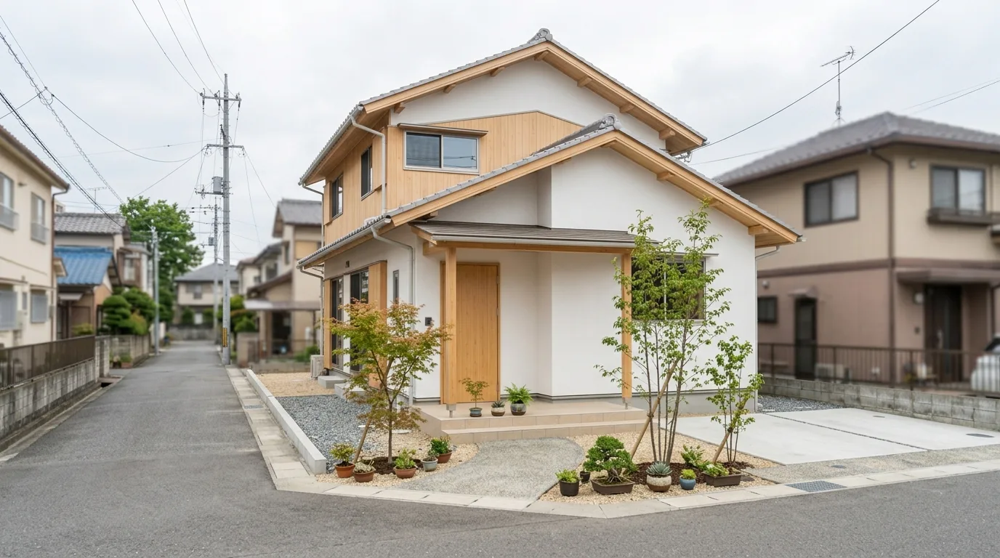

保証とアフターサービス
お引き渡しがゴールではありません。完成後も定期的に伺い、傷みが出る前に手を入れます。点検は3ヶ月・6ヶ月・1年・2年・5年・10年の計6回。いずれも無償で、こちらから事前にご連絡します。

引き渡しからが、長いお付き合い
PRINCIPLE引き渡しがゴールではない
鍵をお渡ししたところが終わりではありません。ここからが長いお付き合いの始まりです。
定期的に伺う
完成後も定期的に伺います。住んでからでないと分からないことのほうが、実際は多いからです。
傷みが出る前に手を入れる
壊れてから直すより、傷みが出る前に手を入れるほうが、住まいにも家計にも負担が少なくて済みます。
住んでからのほうが、
時間は長い。
つくっている期間より、そこで暮らす時間のほうがずっと長くなります。長く住むための手入れまで含めて、家づくりだと考えています。
木は、季節や年数で動きます。建具の建て付けや外まわりの木部は、時間が経つと少しずつ変わっていきます。そういう変化は、早いうちなら小さな手当てで済みます。
-
A-01
気になったら、いつでも
気になることが出てきたら、いつでもご連絡ください。点検の時期を待つ必要はありません。
-
A-02
つくった人間が見に行く
どこにどの材を使い、どう納めたか。図面と現場を知っている側が見るほうが、原因にたどり着くのが早くなります。
-
A-03
対象と期間をはっきり書く
どこが何年の保証なのか、対象にならないものは何か。F-04 と F-05 の表に、そのまま書いています。

PHOTO 02ご連絡いただく先CONTACT
- C-aメール info@example.com
- C-bLINE 24H RECEPTION
- C-c受付時間 8:30 — 17:30／定休日 日曜日
お引き渡しからの時間軸
TIME LINE — N.T.S.お引き渡しを起点にして、点検の時期を寸法線の上に置いた図です。3ヶ月・6ヶ月・1年・2年・5年・10年の計6回、こちらから事前にご連絡して伺います。はじめは短い間隔で、あとになるほど間隔が空きます。住みはじめの時期に出てくることのほうが多いからです。
TIME LINE — 3M / 6M / 1Y / 2Y / 5Y / 10Y点検の順に並べています。間隔は年数に比例していません
- HANDOVERお引き渡し。ここが起点です。
- 3M3ヶ月点検。建具の建て付けと、設備の使い勝手を見ます。
- 6M6ヶ月点検。木部の乾燥による動きと、内部の隙。
- 1Y1年点検。一巡した季節での変化と、外まわり。
- 2Y2年点検。設備機器とシーリング。
- 5Y5年点検。外壁・屋根・防蟻。
- 10Y10年点検。構造・防水の節目の点検です。
- CONTINUES10年で終わりではありません。図が右端で切れていないのは、お付き合いがそこで終わらないという意味です。
上の図は点検の順番と間隔の変わり方を示すもので、横の長さは年数に比例していません
点検と保証の項目
SCHEDULE伺う時期と、そのとき主に見るところを並べました。全6回とも無償で、時期が近づいたらこちらからご連絡します。下の表にある項目のほかにも、気になっているところがあれば当日にお伝えください。
| 回 | 時期 | 主に見るところ |
|---|---|---|
| 1回目 | 3ヶ月 | 建具の建て付け、設備の使い勝手。住みはじめて気づかれたことを一緒に確かめます。 |
| 2回目 | 6ヶ月 | 木部の乾燥による動き、内部の隙。木が落ち着くまでのあいだに出る変化です。 |
| 3回目 | 1年 | 一巡した季節での変化と、外まわり。夏と冬を越えた状態を見ます。 |
| 4回目 | 2年 | 設備機器、シーリング。動くところと、切れてくるところです。 |
| 5回目 | 5年 | 外壁・屋根・防蟻。日と雨の当たり方で傷み方が変わるところを見ます。 |
| 6回目 | 10年 | 構造・防水の節目の点検。ここから先の手入れの計画も、あわせてご相談します。 |
| 対象 | 期間 | 内容 |
|---|---|---|
| 構造耐力上主要な部分 | 10年 | 基礎、柱、梁など、建物を支えている部分です。住宅瑕疵担保責任保険にもとづくものです。 |
| 雨水の浸入を防ぐ部分 | 10年 | 屋根、外壁、開口部まわりの防水。こちらも同じ保険にもとづきます。 |
| 防蟻処理 | 5年 | 5年目の点検にあわせて、状態を見てから次のご相談をします。 |
| 住宅設備機器 | メーカー保証 | メーカーの保証に準じます。多くは1〜2年です。機器ごとの書面をお渡しします。 |
| 建具・内装の仕上げ | 2年 | 建て付けや仕上げの不具合。木の動きによるものは、2年目までに落ち着くことがほとんどです。 |
| 点検以外のご連絡 | 随時 | 気になることが出てきたら、いつでもご連絡ください。点検の時期を待つ必要はありません。 |
| 受付 | 8:30 — 17:30 | メール info@example.com／LINE は24時間受け付けています。定休日は日曜日です。 |
| ところ | 関係する保証 | お住まいで気づかれたら |
|---|---|---|
| 雨のあとの染み | 雨水の浸入／10年 | 天井や壁に色の変わったところが出たら、写真を撮っておいていただけると助かります。 |
| 建具の建て付け | 建具・内装／2年 | 戸が重くなった、閉まりきらない。木が動いているサインなので、早いうちのほうが直しやすくなります。 |
| 外まわりの木部 | 経年の変化／対象外 | 軒の裏や外壁の木は、日と雨の当たり方で傷み方が変わります。色が抜けてきたら一度見せてください。塗り直しの時期をご相談します。 |
| 水まわり | 設備／メーカー保証 | 床が湿っている、においが残る。見えないところで起きていることが多いので、早めにご連絡ください。 |
| 床の音・床下 | 構造／10年・防蟻／5年 | 歩いたときの音が変わったら、床下の状態を見て確かめます。 |
上の表は、お気づきのときにご連絡いただきたいところの例です。原因によって扱いが変わるため、実際に見てからご説明します
保証の範囲と費用
SCOPE & FEE対象になるものと、ならないもの。線引きを先に書いておきます。境目にあたるものは、原因を決めつけずに、実際に見てからご説明します。費用がかかる場合は、着手の前に必ずお見積りをお出しします。
対象になるものCOVERED
- 01構造耐力上主要な部分の不具合。10年。
- 02雨水の浸入を防ぐ部分の不具合。10年。
- 03防蟻処理。5年。
- 04建具・内装の仕上げの不具合。2年。
- 05住宅設備機器。メーカーの保証に準じます。
対象にならないものNOT COVERED
- 06経年による変化。木の色が抜ける、塗装が薄くなるといったものです。
- 07お住まいの使い方による損傷。
- 08天災によるもの。
- 09消耗品の交換と、住まい手による手入れの範囲のもの。
点検と補修の費用FEE — SHEET F-01
| 区分 | 費用 | 備考 |
|---|---|---|
| 定期点検（全6回） | 無償 | 3ヶ月・6ヶ月・1年・2年・5年・10年。事前にこちらからご連絡します。 |
| 点検の時期以外のご相談 | 無償 | 気になることが出てきたときの、状態を見に伺うところまで。 |
| 保証の対象となる補修 | 無償 | 上の COVERED にあたるもの。期間内であれば費用はいただきません。 |
| 保証の対象外の補修・交換 | 有償 | 着手の前にお見積りをお出しします。金額をお伝えせずに進めることはありません。 |
| 塗り直しなどの手入れ | 有償 | 外まわりの木部など。時期の目安は点検のときにご相談します。 |
構造・雨水の浸入を防ぐ部分の10年は、住宅瑕疵担保責任保険にもとづくものです
気になることが出てきたら
CONTACT & NEXT SHEET点検の時期を待たなくて構いません。小さいうちに見たほうが、手当ても小さく済みます。お引き渡しの前の段階については E-01、費用の分け方は G-01 のシートにまとめています。
土地と費用の考え方を見る SHEET G-01 / LAND & COST → お引き渡しまでの流れに戻る SHEET E-01 / PROCESS →